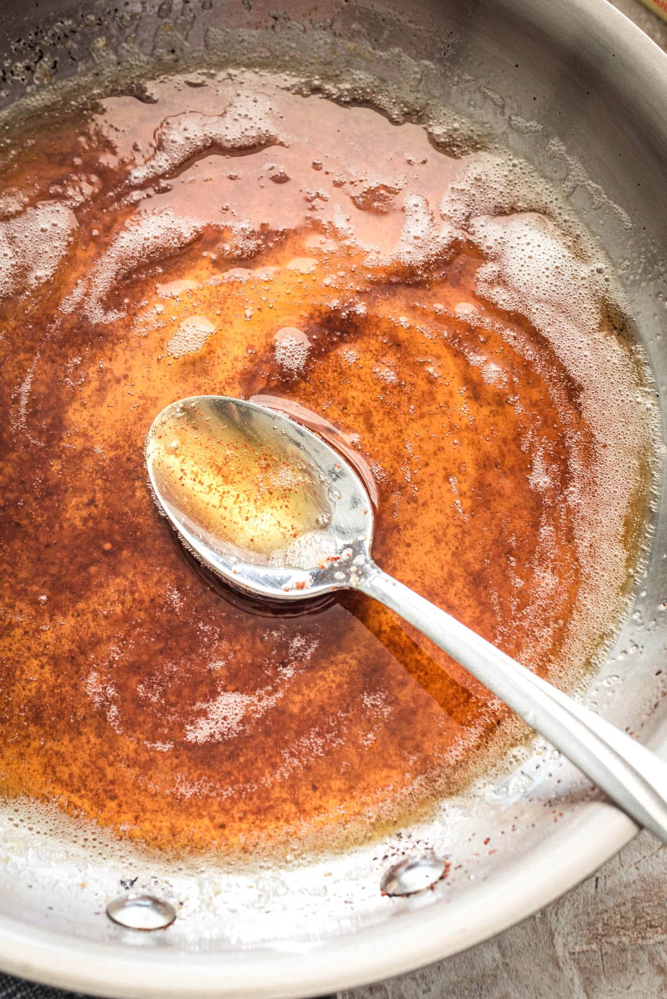
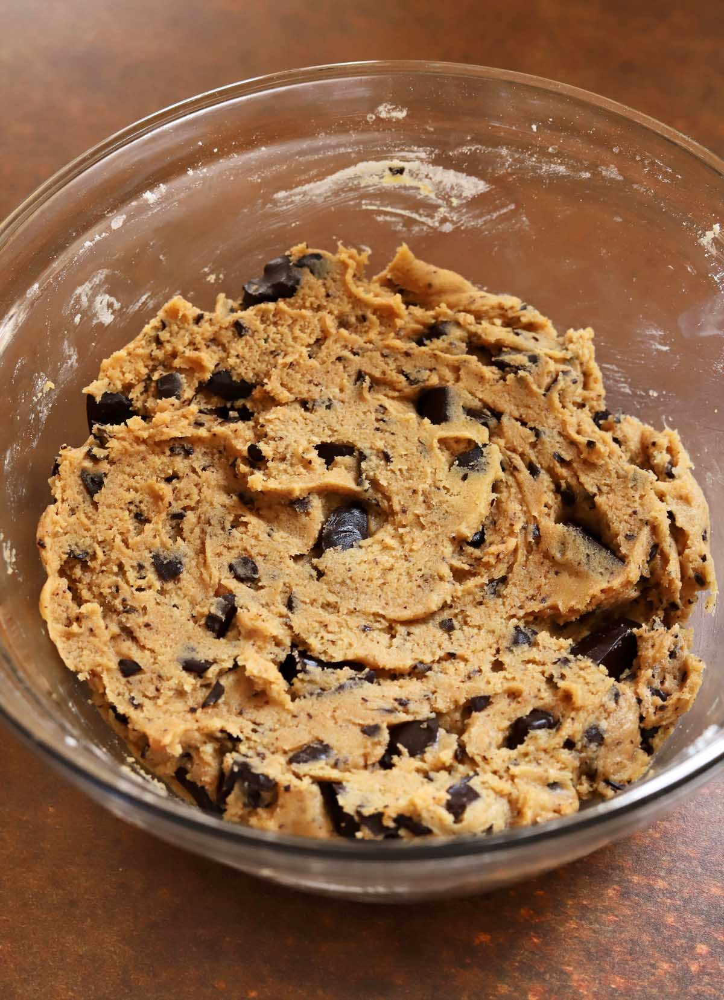
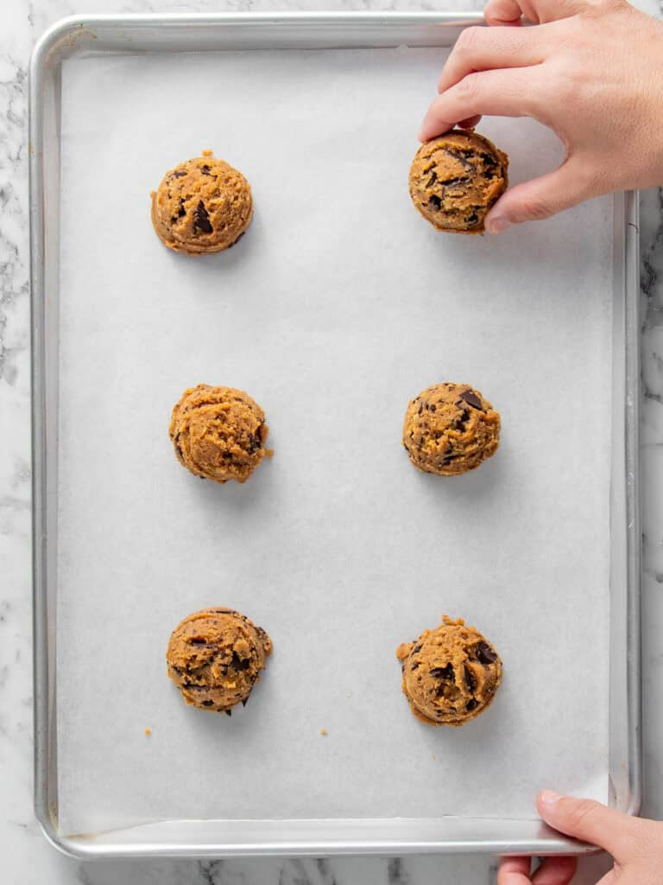

Brown Butter Chocolate Chip Cookies

About
These brown butter chocolate chip cookies are the perfect comfort treat! The brown butter adds a rich flavor that pairs perfectly with the chocolate chips.
Timeline
Brown Butter
20 minutes
Make Dough
15 minutes
Chill Dough
1–2 hours
Bake Cookies
8–10 minutes
Servings
Choose your batch size:
Ingredients
1x Recipe
Directions
1. Brown the butter
Melt the butter in a pan over medium heat. Stir until it becomes golden brown. Remove from heat and allow it to cool.

2. Make the dough
Mix the browned butter with both sugars. Add the eggs and vanilla. In another bowl, combine the flour, baking soda, and salt. Mix everything together and then add the chocolate chips.

3. Chill the dough
Cover the dough and refrigerate for 1 to 2 hours before baking.
4. Bake the cookies
Preheat the oven to 350°F. Put the dough onto a baking sheet and bake for 8 to 10 minutes or until the edges are golden brown. Let the cookies cool before serving.
